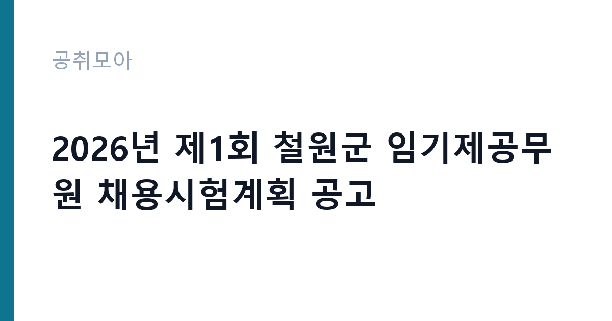

[지자체] 2026년 제1회 철원군 임기제공무원 채용시험계획 공고
강원특별자치도 철원군 · 강원 · 마감 2026-10-13 (D-25) · 출처 나라일터

한눈에 보는 모집 조건
| 기관 | 강원특별자치도 철원군 |
|---|---|
| 공고명 | 2026년 제1회 철원군 임기제공무원 채용시험계획 공고 |
| 고용형태 | 임기제 |
| 근무지 | 강원 |
| 게시일 | 2026-09-18 |
| 마감일 | 2026-10-13 (D-25) |
지원자격, 이렇게 읽으세요
- 나~마급 24명
- 접수 ~2026-10-13 마감
- 세부 조건은 원문 공고문 확인
공고문의 응시자격은 짧게 쓰여 있지만 실제로는 세 가지를 봅니다. 첫째 결격사유 해당 여부, 둘째 자격·경력의 직무 연관성, 셋째 근무 시작 가능일입니다. 셋 중 하나라도 애매하면 원문 공고문의 세부 조항을 먼저 확인하고 지원서를 쓰세요. 특히 강원특별자치도 철원군 공고는 임기제 전형이라 서류에서 직무 연관 키워드(지자체)를 명시하는 게 유리합니다.
이 공고의 포인트
합격 가능성을 가르는 한 줄은 '나~마급 24명'입니다. 태그로 치면 ''에 해당하는 지원자가 유리한 구조입니다. 강원특별자치도 철원군 공고는 D-25이라 시간이 촉박하니, 해당자는 오늘 지원서를 열고 비해당자는 관련 공고로 눈을 돌리는 결단이 필요합니다.
전형은 어떻게 진행되나
일반적인 순서는 서류심사 통과 후 면접심사입니다. 서류에서는 직무와 연결되는 경험이 있는지, 면접에서는 그 경험을 직접 설명할 수 있는지를 봅니다. 마감일(2026-10-13) 코앞에 몰리면 원서 접수 자체가 안 될 수 있으니 최소 하루 전에 제출하세요. 제출 뒤에는 접수번호·수험표가 정상 발급됐는지 확인이 필수입니다.
원문에서 확인한 전형 방식
○ 모집분야 : 정책협력관, 영상, 사진, 교통지도, 사서, 간호사, 상하수도사업소 운영, 정수시설관리사, 수질분석실, 모노레일안전관리자, 한시임기제 8호 등 ○ 선발직급 : 나~ 마급 상당 ○ 고용형태 : 임기제 ○ 자격요건 : 자격증, 경력 등 ○ 접수기간 : 2026년 10월 06일 ~ 2026년 10월 13일
위 내용은 강원특별자치도 철원군 원문 공고의 전형 항목을 그대로 옮긴 것입니다. 단계별 배수와 평가 요소가 적혀 있으니 본인 강점과 맞는 단계에 맞춰 준비 순서를 정하세요. 전형별 합격자 발표일도 원문에서 함께 확인하는 것이 좋습니다.
이런 분께 추천해요
- 강원 근무가 가능한 분 — 통근·거주 조건이 맞는지가 1순위입니다
- 임기제 전형을 찾는 분 — 지자체 분야 관심자라면 우선 검토 대상입니다
- 마감(2026-10-13) 안에 서류를 낼 수 있는 분 — D-25이니 오늘 지원서 초안부터 잡으세요
지원 전 체크리스트
- 원문 공고문의 응시자격·결격사유 정독했는가
- 자격증·경력증명서 등 증빙 스캔 준비됐는가
- 마감일(2026-10-13) 전날까지 접수 가능한가
- 근무지(강원)·근무형태(임기제) 감당 가능한가
모집 일정과 제출 타이밍
게시일은 2026-09-18, 마감은 2026-10-13입니다. 남은 기간은 약 25일입니다. 서류 준비에 24일을 쓰고 마지막 하루는 접수·확인용으로 남겨두세요. 공공 채용은 마감일 24시간 전부터 지원자가 몰려 접수 페이지가 느려지거나 증빙 업로드가 실패하는 일이 잦습니다. 일정 운영의 정석은 이렇습니다. 첫날에는 공고문과 직무기술서를 출력해 응시자격·우대사항에 형광펜을 치고, 중간 기간에는 자기소개서 초안과 증빙 스캔을 끝내고, 마감 전날에는 접수 시스템에 미리 입력까지 마쳐 두는 것입니다. 마감 당일에 처음 접속하는 지원자가 가장 많이 탈락합니다. 접수번호가 발급되고 수험표(또는 접수확인서)가 출력돼야 접수가 끝난 것이니, 제출 후 확인증까지 꼭 챙기세요.
직무 이해하기: 지자체
지자체 채용은 해당 지역 이해도와 정주 의지를 봅니다. 거주 요건이 없더라도 지역 연고나 이해를 자기소개서에 담으면 좋은 평가를 받습니다. 임기제·개방형은 민간 경력을 그대로 인정받는 경우가 많으니 경력증명서를 빠짐없이 준비하세요. 강원특별자치도 철원군의 이번 채용(임기제)도 같은 잣대로 보면 됩니다. 공고 제목에 적힌 분야명과 직무기술서의 필요역량을 나란히 놓고, 본인 경험에서 겹치는 키워드를 세 개 이상 뽑아보세요. 그 세 개가 자기소개서와 면접 답변의 뼈대가 됩니다.
자기소개서 작성 팁
공공기관 자기소개서 심사는 화려한 문장보다 직무 연관 경험의 구체성을 봅니다. 첫 문단에는 지원 분야(지자체)와의 연결고리를 한 줄로 선언하고, 본론에는 숫자(기간·규모·성과)가 들어간 경험 두 개를 배치하고, 마무리는 입사 후 1년 안에 해낼 일을 적으세요. 강원특별자치도 철원군 지원서에 흔한 감점 요인은 세 가지입니다. 모집 분야와 무관한 장황한 성장 과정, 증빙 없는 주장(자격·경력), 그리고 마감일 오기재입니다. 특히 임기제 전형은 실무 투입 속도를 보기 때문에 즉시 근무 가능함을 문장으로 명시하면 좋습니다.
면접 준비 포인트
면접은 서류에 쓴 경험의 진위 확인과 조직 적합성 검증이 목적입니다. 자기소개서에 적은 두 가지 경험을 1분 스피치로 말할 수 있게 연습하고, 강원특별자치도 철원군의 최근 보도자료나 경영공시에서 핵심 사업 하나를 골라 지원 분야와 연결해 답변을 준비하세요. 마지막 질문 시간에는 근무지(강원)·근무형태(임기제)를 감당할 수 있다는 의지를 짧게 밝히는 것이 효과적입니다. 복장은 단정하게, 도착은 30분 전에, 질문에는 결론부터 말하는 것이 공공기관 면접의 기본입니다.
급여·근무조건 읽는 법
공고문의 보수 표기는 호봉·수당·상여를 합친 기준이 아니라 기본급 기준인 경우가 많습니다. 실제 수령액은 원문의 보수·복무 조항과 동일 기관 재직자 채용 후기를 함께 봐야 가늠이 됩니다. 임기제 공고라면 계약 기간, 연장·전환 조건, 4대 보험과 퇴직금 적용 여부를 원문에서 반드시 확인하세요. 근무지(강원)가 도서·산간이거나 교대 근무가 포함된 경우에는 주거 지원·통근버스 조항도 체크리스트에 넣으세요.
자주 묻는 질문
- 다른 분야와 중복 지원이 가능한가요?
공고문에 별도 금지 조항이 없으면 가능하지만, 강원특별자치도 철원군처럼 분야별 중복지원을 막는 기관이 많습니다. 원문 '지원 시 유의사항'을 먼저 확인하고, 가능하다면 가장 합격 가능성이 높은 한 분야에 집중하세요. - 우대사항에 해당되는지 어떻게 확인하나요?
이번 공고의 핵심 우대 조건은 '나~마급 24명'와 ''입니다. 증빙(자격증·경력증명서·취업지원대상자 증명서) 발급에 시간이 걸리니 마감일(2026-10-13) 기준 최소 3일 전에는 서류를 손에 쥐고 있어야 합니다. - 서류가 간소화되는 경우도 있나요?
청년인턴·기간제 등 일부 전형은 서류심사를 생략하고 면접만 보기도 합니다. 강원특별자치도 철원군 공고문의 전형절차 표를 확인하세요. 간소화 전형일수록 면접 준비에 시간을 몰아주는 게 유리합니다.
함께 보면 좋은 공고
[지자체] 2026년 제2회 칠곡군의회 일반임기제공무원(정책지원관) 임용시험 계획 공고 — 마감 2026-09-30[지자체] 2026년도 제6회 전남광주통합특별시 지방임기제공무원 임용시험 계획 공고 — 마감 2026-09-28[지자체] 2026년도 제1회 철원군지방공무원 경력경쟁임용시험 시행계획 공고 — 마감 2026-10-30출처: 나라일터 공개정보를 바탕으로 공취모아가 정리한 안내글입니다. 모집 조건·일정은 변경될 수 있으니 지원 전 반드시 원문 공고문을 확인하세요. 본 글은 정보 제공용이며 합격을 보장하지 않습니다.